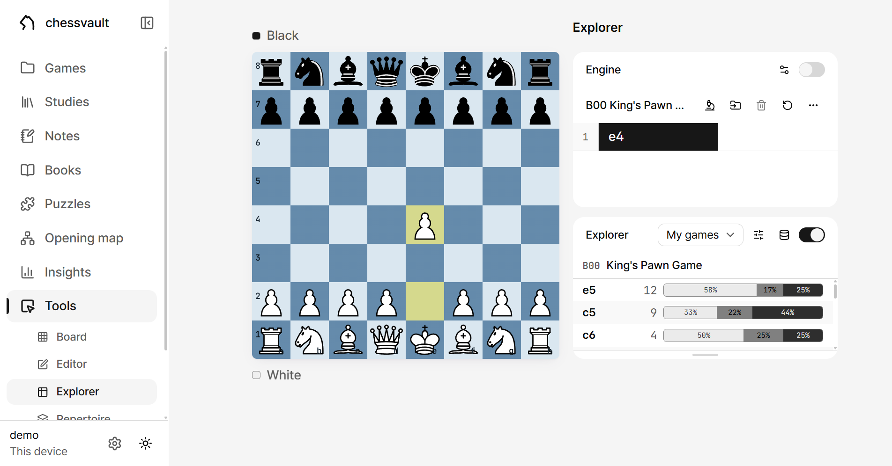
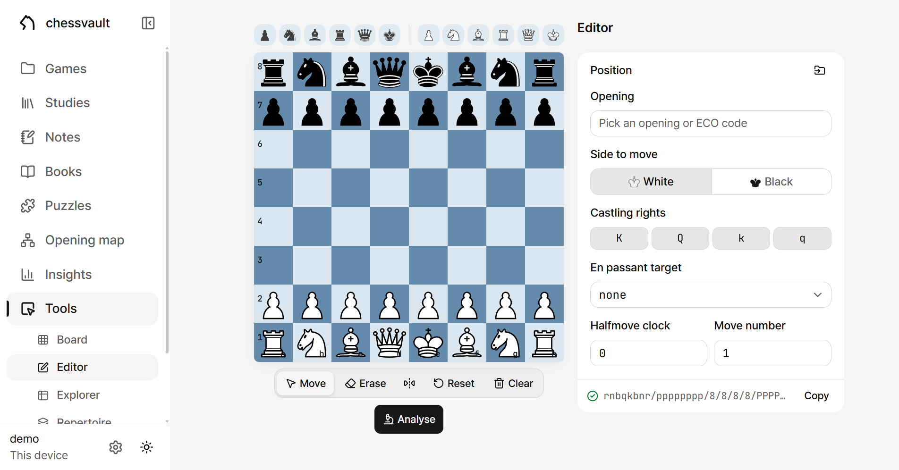
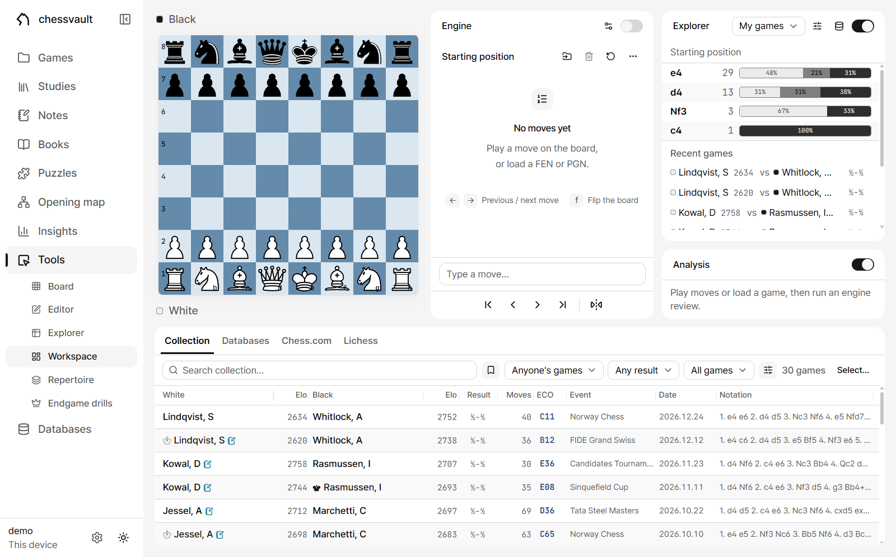
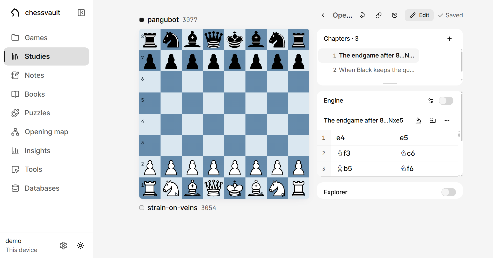
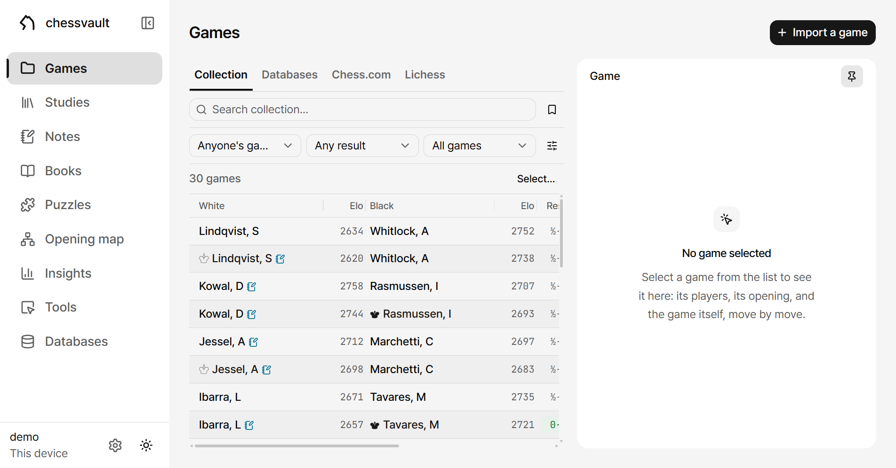
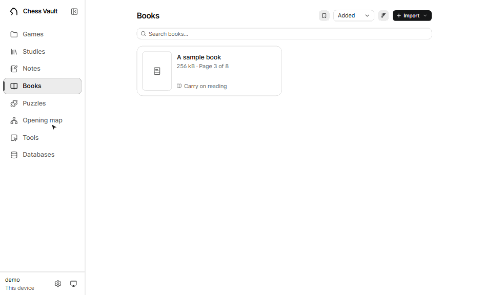
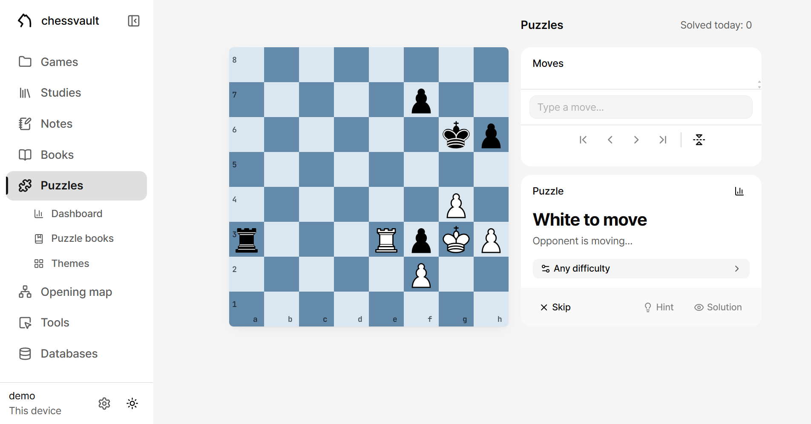
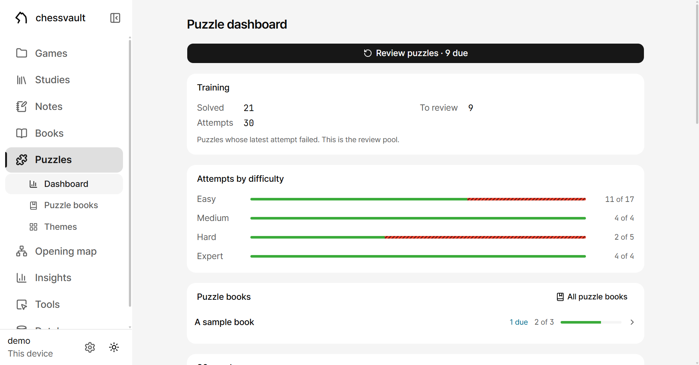
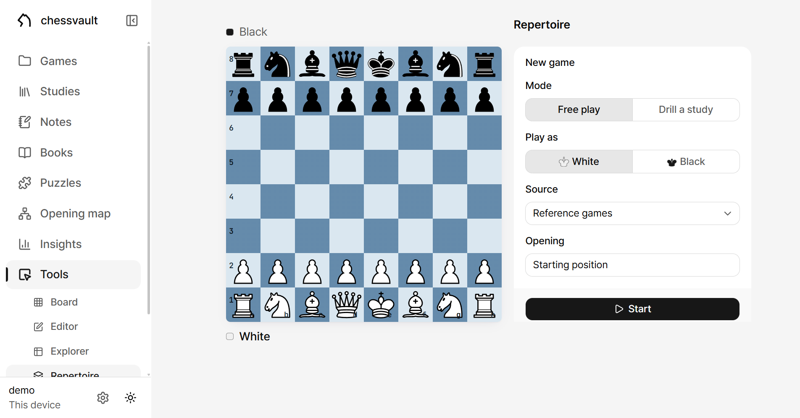

The Chess Vault docs
One page per screen of the app — from what the screen is for, down to what every button does. Pick a page from the contents on the left. Everything here can be tried in the demo — no install, no account.
Chess Vault is a private, self-hosted chess workbench: engine analysis, an opening explorer, studies, notes, a curated game collection, and a puzzle trainer fed by real paper books — everything stored as plain files (PGN, markdown, JSON) in one folder you own.

If you are new
- Getting started — how to install it, the first run, and what to do in the first minutes.
- The vault — where your data lives and how. The key to understanding the app.
- Around the app — how the screens are laid out.
After that, read in order or jump to the screen you are curious about — each page is written to stand alone.
Getting started
There are two ways to run Chess Vault, and both are the same app. The only difference is where the vault lives — the folder holding your games, studies, notes and puzzles.
- On this device. Download the installer for Windows, macOS or Linux from Releases and run it. No Node, no terminal; updates arrive through the app itself.
- On a server. One small Linux box owns the vault, and every device — phone, laptop, desktop — becomes a client of it. The README has the server setup.
When in doubt, start with the first. The vault is a folder, so moving to a server later is copying a folder.
First run
The desktop app's first question is where your vault lives:
| On this computer | Everything runs and stays locally. It then asks which folder — below. |
| On my server |
The same app becomes a window onto a server you host. The address must start
with https://.
|
Choosing On this computer, the “Open your vault” step offers two answers:
| App-managed vault | The app picks a folder in your user profile and gets on with it. You can move it later. |
| Open a folder… | Any folder becomes your vault, including one you already have. Derived data (reference databases, indexes) lives inside it too, so moving or syncing the folder takes everything with it. |
The choice is not permanent: Settings → Desktop app → Vault → Switch… changes it any time.
The band at the top of the window is the app's: one strip in the sidebar's colour, edge to edge, so the sidebar's column runs to the top of the window. From the left: the sidebar's “Fold the sidebar” switch (on the band, so the sidebar itself has none there), then ☰, which opens the application menu (“Switch vault…” · “Reload” · “Full screen” · “Zoom in” · “Zoom out” · “Reset zoom” · “Developer tools” · “Quit”), then “Back” and “Forward” through the app's history. Over a folded rail only the switch stays, and the rest sit to its right. In the middle of the band an “Open anything…” button, with its shortcut beside it, opens the quick switcher from any page (see Around the app); a browser has no band and no such button, and Ctrl/⌘ K reaches the same window. Minimize, maximize and close are the OS's own buttons, and dragging the band's empty part moves the window.
The first minutes
A fresh vault opens onto a Home page with a Set up your vault card suggesting three things, all done inside the app:
- Add your Chess.com / Lichess usernames in Settings — the Games page fills itself from them.
- Open Puzzles and accept the puzzle database it offers to fetch. It takes a few minutes, keeps running if you leave the page, and the trainer works offline from then on.
- Import a scanned tactics book you own — see Puzzle books. This one can wait.
A Lichess token is only needed for the online extras — the online opening explorer, importing Lichess studies and puzzle history; see Settings. Everything else runs without one.
A lock screen? It only exists once an app password is set in Settings. A purely local install never sees it; a server others can reach should set one — Settings → Security.
The vault
The vault is a folder of plain files: studies and games are PGN, notes are markdown, progress is JSON. Any editor opens them, Obsidian reads them as they are, and if this app ever goes away your chess opens in something else.
Backing up
Settings → Vault has “Download a copy”: one tar file of every document and the change history, named after the vault and the day, that any OS opens. Settings and tokens stay on the server. Copying the vault folder is a backup too — derived databases and indexes included. The derived things (the puzzle pool, reference game databases, indexes) can always be deleted and rebuilt; no database holds your work hostage.
Earlier versions
Every study, game and note carries a clock button in its header — Earlier versions (on a phone it sits with the other tools behind the title row's ⋯). Each save is kept automatically; pick a time to look at it and Restore this version brings it back. The version you have now is kept too, so you can always come back. A vault that keeps no history — a server without git, say — says so: “This vault is not keeping a history, so there is nothing earlier to show.”
Restoring, and starting over
- Settings → Deleted documents restores studies, notes and games that are gone entirely — Bring this back.
- Settings → Danger zone wipes the whole vault. It makes you type an arming phrase, then asks for the app password when one is set. There is no undo, so download a copy first.
What lives where
| What | Format |
|---|---|
| Studies and games (chapters, variations, comments, arrows) | PGN |
| Notes (wiki-links and board fences included) | Markdown |
| Puzzle progress, the repertoire record, the opening map | JSON |
| Uploaded book PDFs, PGN files | The files themselves |
| Reference databases, the puzzle pool, indexes (derived — rebuildable) | SQLite |
The Vault card in Settings shows the folder: its exact path, its size, and a row for each kind of thing in it. Copy the path from there.
Around the app, and Home
A left sidebar joins the pages on a wide screen, a bottom bar on a phone. Home leads with what you were last doing, and its arrangement is yours to decide.
Navigation
The sidebar, top to bottom: Games · Studies · Notes · Books · Puzzles (with Dashboard, Puzzle books and Themes under it) · Opening map · Insights · Tools (Board, Editor, Explorer, Workspace, Repertoire, Endgame drills — the Workspace row exists only on windows wide enough to hold that page; see The workspace) · Databases. The Puzzles and Tools sub-rows unfold only while that section is open. Below them sit the vault's name (the one given in Settings → Vault, else its folder's; the full path in the tooltip; unfolded only), the connection label (“This device”, your server's name, or “Offline”; wide windows only), the Settings gear, and the light/dark toggle. At the end of the brand row, beside the mark, “Fold the sidebar” folds the sidebar to its icons; folded, the same button on the first row of the column reads “Unfold the sidebar” and unfolds it, and hovering a row shows its name as a tooltip. Until you choose, the window decides: labels on a wide window, icons on a narrower one. One press keeps your choice on this device. Ctrl/⌘ B folds and unfolds it too, wherever there is a sidebar, and the keyboard list under ? names it (“Fold or unfold the sidebar”). In the desktop app the switch sits on the window's band instead; see Getting started.
A phone's bottom bar carries Home · Games · Studies · Puzzles · More; Notes, Books, Opening map, Insights, Endgame drills, Databases, Settings and the rest of the tools live under More. A second tap on the tab of the page you are on scrolls that page back to the top. Drag along the bar and the pill follows your finger, the tab under it lights, and the app moves to whichever tab you let go on. On a page with a board the bar becomes that page's own controls — see On a phone.
From anywhere, Ctrl/⌘ K opens the «Open anything» window; the desktop app's band carries an “Open anything…” button to it, and a browser's Home page a search button. With nothing typed, “Recent” names the documents this device opened last. Typing finds the sections (“Go to”) and every study, note, game, book and puzzle book in the vault by name, and by their text the notes, the comments in studies and games, and the titles of books and puzzle books that hold every word typed: names list first, and under them «In the text» lists each document with the sentence the words sit in and the match in bold. An “Actions” group holds the app's own verbs (the light, dark or system theme, the density, “Fold the sidebar”, “Keyboard shortcuts”), so each can be reached by name. Nothing found says “Nothing matches.”; on a desktop the window ends with its keys (↑ ↓ move, ↵ opens, Esc closes). On a phone the search button at the end of Home's title row opens the same window as a sheet.
Home
What Home is made of, top to bottom:
When the server does not answer, Home shows a “Vault server unreachable” card with a “Retry” button instead of drawing an empty vault.
| Continue | Your latest study's position as a small board at the top (“Continue study”), then one-tap resume rows under it: the last game document (“Last game”), “Resume training” with what is due (“{n} due”) or, when nothing is, the current difficulty word — once the puzzle database is ready and something has been attempted — and “Repertoire review” whenever the drill schedule has positions due. A study with no position to draw gets a row instead of the board. That last row is the phone’s only reminder of it; on a desktop the “Training” panel below carries it instead. On the game row the date at the end of the name is kept whole beside it, so a long pairing truncates the names and not the date. |
| Set up your vault | The three-step checklist for a new vault (usernames, the puzzle database, a tactics book). Steps tick off as they are done and the card leaves when all three are; the X (“Hide this checklist”) dismisses it early. On a phone it sits under the “Shortcuts” grid. |
| The tile grid (phone) | Destination tiles with personal figures. The defaults are three: Board, Explorer and Opening map. Games, Studies, Notes and Puzzles, which the bottom bar already reaches, are not drawn on home in a vault that has never been customised; “Customise home” lists them under “Off the page” with a way back. The first tile takes the whole row, so whatever you put first is what the page leads with, and it is filled only when that tile has something due. Puzzles and Repertoire show a schedule rather than a size: “{n} due” when the trainer has something for you, otherwise Puzzles shows what you solved today (“{n} today”), and only then the lifetime total. The opening map shows the moves it has charted (“{n} moves”). A destination demoted from the grid keeps a button in the row underneath, so nothing can be arranged out of reach. |
| The dashboard panels (desktop) | “Training” — solved today, and what each trainer has due: the puzzles (“{n} due for review”) and the repertoire drill (“{n} repertoire positions due”, or “Repertoire: the next position comes back {when}”). They share one schedule, so they share one panel. Then “Recent games”, “Puzzle books” (with progress bars), and “Recent work” (latest studies and notes). “Recent games” is the one panel a phone draws too: three rows under Continue. |
| Their section heading | “Overview” on a desktop, “Shortcuts” on a phone — one row, the word chosen by width. The sliders button at its right end opens “Customise home”, below. |
Customise home
The sliders button (“Customise home”) opens a dialog that applies immediately — there is no save button. Inside:
- Cards — one switch per card the page can draw: Continue, Recent games, Set up your vault, Training, Puzzle books and Recent work. A card drawn only on a wide screen says so in its blurb (“Wide screens only.”).
- On the grid — per tile: “Move up” / “Move down” arrows, “Hide” (the crossed-eye icon), and a switch (off demotes it to the row below). There is no drag-and-drop; the arrows are the ordering.
- In the row below — the demoted destinations; their switch promotes them back to the grid.
- Off the page — the hidden ones, each with a “Bring back” eye.
- Reset to default, at the bottom.
The arrangement is stored on this device, not in the vault: a phone's home is its navigation and a desktop's is a dashboard, so each is arranged on its own.
Saving, and leaving
- A document header's save control has four states: Saved (a check) · Saving… (a spinner) · a Save button (unsaved changes — Ctrl/⌘ S does the same) · Retry save (failed, the reason in its tooltip).
- Leaving with unsaved changes raises the “Unsaved changes” question — save, Discard changes, or Cancel.
- Prefer changes written as you make them? Settings → Documents → Auto-save. Off by default.
- Windows open inside windows — the board's “Load a position” into a picture, say. The chevron in the title row goes back one page; the X and Cancel close the whole chain and leave you on the page. A confirmation is the exception: its buttons hand back to whatever asked it.
If a page hits an error it cannot recover from, a “Something went wrong” card offers Reload and Go home — nothing in the vault is affected.
Keyboard and gestures
Press ? anywhere in the app for the shortcut list. The first table below is that list; after it come the habits the list leaves out.
The shortcuts
| ← → | Previous / next move |
| ↑ / Home | Go to the start |
| ↓ / End | Go to the end |
| f | Flip the board (Ctrl+F stays the browser's find) |
| Enter | Play the typed move (in the move box) |
| Ctrl/⌘ S | Save the open document |
| Ctrl/⌘ K | Open anything by name or text (a section, a study, a note, a game, a book) |
| Ctrl/⌘ B | Fold or unfold the sidebar |
| Esc | Close the open window |
| ? | This list |
The board keys go quiet inside a text field or while a dialog is open — the open window owns the keyboard.
Not on the list
- Lists and tables — in a game table ↑ ↓ move the selection, Enter opens, Esc clears; in the game-details panel ← → Home End step through that game.
-
Notes — typing
[[opens the wiki-link autocomplete: ↑ ↓ pick, Enter/Tab accept, Esc dismisses. - Choosing a file — every dashed file box is a button: Tab to it, then Enter or Space opens the file chooser.
- Position from a picture — the image dialogs take a Ctrl+V paste.
- The mouse wheel — rolling it over the board steps through the moves.
- Press and hold — the board's previous/next move buttons repeat while held.
Drawing on the board
With the right button, drag for an arrow, click for a circle. Modifier keys pick the colour: plain = green, Shift/Ctrl = red, Alt = blue, Shift+Alt = yellow — these four are what PGN can store (in a study, drawing works in Edit mode). The engine's best-move arrow is a separate blue auto-arrow, so your drawings never clobber it.
The board
The Board, under Tools, is the free analysis board. Play moves and a tree grows — variations, comments, glyphs, arrows — while the panel beside it tabs between Moves, Engine and Explorer. What you learn here carries everywhere a board appears: studies, games, books, puzzles.
The Board starts fresh every time you open it: an empty board, the engine off, the explorer at its default. The exception is a position handed over by another page (the editor's Analyse, a game from your archive). If the board you left held moves or a loaded game, returning offers it back for a few seconds: “Started a new board”, with “Restore”, which puts back the moves and the move you were standing on — and, when you arrived through Tools › Explorer, points the explorer at that position. The engine stays off. The offer comes once, and reloading the page forgets it.
The board itself
- Moves go by drag or by two clicks (from-square, to-square). Promotion opens a piece picker. How castling is entered is a setting — Appearance → Castling: king two squares (g1) or king onto the rook (h1).
- The player bars on either side show names, ratings and clocks (when the PGN carries them). On the Board page the name fields are editable.
-
The evaluation bar is drawn beside the board while the engine is
on — always from White's point of view. The score is printed to one decimal at the
leading side's end of it (
#4for a mate); the sign is left to that placement, and the tooltip carries the signed, more precise figure. On a phone, where the board is as wide as the screen, the bar lies along the top edge of the board instead and prints the same number at its leading end. -
When the current move carries a quality glyph, a coloured badge pins to its
destination square —
!?!!??!??!— and an open-book badge marks a book move.
The navigation buttons at a panel's foot
Where the panes are tabs — one at a time — they are pinned to the foot of the column, so they are in the same place whatever tab is open: Moves, Engine, Explorer, a study's Chapters. On a screen wide enough to show every pane at once they sit at the foot of the Moves panel. On a phone the bar at the bottom of the screen carries them instead, and nothing stands under the board.
| Start (↑) · Back (←) · Forward (→) · End (↓) | Move navigation; Back/Forward repeat while held. |
| Flip board (f) | Turns the board around. |
The move tree (the Moves panel)
The panel is titled with the live opening name (“Starting position” at first). The mainline draws as number–White–Black rows, side lines as indented branches, comments as full-width rows. Clicking any move goes there. A small dot on a move means “Has a comment”; an open book, “Book move”. An empty tree says “No moves yet” over “Play a move on the board, or load a FEN or PGN.” and, where there is a keyboard, the two keys the panel answers under it (← → “Previous / next move”, f “Flip the board”).
At the foot of the panel is the move box (“Type a move…”). Type a move in any spelling (Nf3, g1f3, 0-0, e8Q) and Enter plays it on the board and empties the box; a move that is not legal stays in the box with “Not a legal move here” under it. This is the keyboard's way onto the board, and in the puzzle and book trainers a typed move is judged exactly as a dragged one. Settings › Appearance › “Move box” hides the row on this device.
A side line can be lifted two ways. Promote this line moves it one place up among the lines it sits beside, so a line nested inside another can be rearranged without being hoisted past everything at once — press it again and again and it ends on the mainline. Make mainline gets there in one. Both are in the panel's ⋯ menu at every width, acting on the move you are standing on; right-clicking a move offers the same two for that move. On a touch screen a long press does the same, except on iPhone and iPad, where it does nothing and the ⋯ is the way in. The Make mainline strip under the table, which appears whenever the cursor sits on a side line, is there from tablet width up.
The panel's header buttons, in order
| Show the current line only | Folds the branches away to read one line. Absent while the tree has no branches at all. |
| Engine review | Judges the whole game — see Game review below. |
| Add this game to the collection | Puts a loaded game into your collection; turns into “In the collection” (a green check). On the Board page and in the workspace's moves panel, and only with a real game loaded. On a phone it is a row in the ⋯ menu instead, answering with a toast. |
| Load a position from FEN, PGN or an image | See Loading a position below. |
| Delete this move and everything after it | The trash icon; undoable via a toast for a moment. |
| Clear all moves · Clear the board | Empty the tree — and, where allowed, the board too. |
| More (⋯) | The overflow menu for whatever the width pushed out — and the home of Copy FEN and Copy PGN. |
Annotating
The annotation tools live in a pane at the foot of the Moves panel, in studies and
games only, and only in Edit mode. The glyph palette comes in two groups — quality:
! ? !! ?? !?
?!, and assessment: ⩲ ± +−
= ∞ ⩱ ∓ −+. One per
group; pressing the active one clears it. Each glyph's tooltip names it (“Good move”, “Blunder”, “White is slightly better” and so on). The chevron beside the box (“Show glyphs” /
“Hide glyphs”) folds the palette. The text box below is the comment on this move —
at the root it becomes the chapter introduction, and there the glyphs and the chevron
are gone with it, a chapter having no move to judge. Arrows and circles are not here:
they are drawn on the board itself.
Typing [[ in the comment opens the wiki-link list
above the box — the same list a note gets, and the same keys
(↑↓ pick, Enter/Tab accept,
Esc dismiss). A link written here reads as a link in the move list and
shows up under the named document's “Linked mentions”. On a phone it works inside
the comment sheet too.
Two things a comment cannot keep are rewritten as you type them. A }
becomes a ) — a PGN comment ends at one and has no way to escape it —
and anything shaped like [%eval 9.9] gets one space through it, or the
prose would come back as an evaluation on the move, or an arrow nobody drew. A line
under the box says so and clears itself.
Loading a position
The Load a position dialog takes three things: a FEN or PGN pasted into the field (Enter submits; while empty, a corner “Paste” button reads the clipboard), or a picture dropped on the dashed box — “click to choose, drop a file, or paste an image”. A screenshot or scan reads best; drag the four handles onto the diagram's corners and press Read position, ticking “Black at the bottom” when it is.
Game review
Engine review (the microscope — “judge every move (?!/?/??) and measure accuracy”) sweeps the whole game. Before it runs, a band under the move list offers it; on a phone that offer is a toast over the page for a few seconds instead, with an X. When it finishes, the strip under the move list holds:
- The evaluation graph — click or drag to jump; the move under the pointer marks itself with a blue dot and a guide line, so you see where a click lands before it does. Folds away.
-
Per-side summaries: accuracy %, average loss, the book-move count (“known opening
theory, not judged”), and how many
!!?!???each side earned — the verdicts land on the move list and the board too. -
Moves after the pieces run out — seven or fewer — are judged by the
tablebase instead of the engine: on the result they left behind,
not on how far the evaluation moved. A
??is a move that turned a win into a draw or a draw into a loss, at any distance (mate in 5 becoming mate in 40 throws nothing away). There are no endgame inaccuracies, and no brilliancies. How many moves the tables judged sits beside the book count under a crown; accuracy and average loss stay the engine's own measurement. Settings → Tablebase switches this off with the rest. - Close the review takes the strip away.
The engine
Stockfish 19 runs in the browser itself — no server, no internet. The Engine panel docks above the moves on a desktop and gets its own tab on a phone.
The panel header
Beside the word “Engine”, while it runs, sit the current score (in the text colour, not
green or red: an evaluation is a quantity, not an outcome) and the depth readout. To the right, two
controls:
| Engine settings | Opens the dialog below — whether or not the engine is on. |
| Engine on/off | The switch; its tooltip reads “Turn the engine on” / “Turn the engine off”. |
Engine settings
| Setting | Range | Meaning |
|---|---|---|
| Engine | Stockfish 19 lite · Stockfish 19 · Stockfish 18 | A list of which engine runs. Stockfish 19 lite runs on the 1 MB network every build ships; Stockfish 19 on its own full network, stronger and slower to load; Stockfish 18 is the single-threaded build. The first pick of Stockfish 19 has the server download 99 MB and keep it (a progress bar shows it), and the pick takes effect once it has arrived; “Remove” under it deletes it from the server again. The demo does not offer Stockfish 19, and a page without threads offers only Stockfish 18. |
| Threads | 1 – your cores | Parallel search. Multi-threading needs a cross-origin-isolated page (HTTPS); where that is missing the slider is locked with “unavailable in this context”. |
| Lines | 1 – 6 | How many candidate lines to show at once (MultiPV). |
| Depth | 10 – 40 | Where the search stops. |
| Time limit | 0 – 60 s | A per-position ceiling; 0 means off (—). |
| Hash | 16 – 1024 MB | The transposition table. |
The candidate lines
- Each line is a fixed-width score column and the variation in SAN. Clicking any move plays the line into the tree; hovering one (on a desktop) pops a mini-board preview of that point; under a thumb each row has a chevron (“Show the whole variation” / “Show one line”) to read past its first line.
- While it has nothing yet: “Thinking…”. A terminal position says so honestly — “Checkmate. There is nothing left to search.”
- Errors show with a warning triangle — even when the engine has switched itself off, the reason stays visible.
Why no explanations? Deliberately. The app does not pretend to translate the engine's judgement into prose — that translation too often becomes a plausible lie. Instead it shows only what the engine actually knows: its lines and its score.
The explorer
What has been played from the current position — a move table with game counts and win/draw/loss, plus games you can open. Reach it as Tools → Explorer, or switch the Explorer panel on wherever a board is.

The panel header
| Explorer source | The source picker, in three groups: Your vault → My games (every game in the vault); Reference databases — one per database you built; Online (via proxy) — the Lichess database (needs the token from Settings). |
| Filters | A filter dialog per source — below. The icon stays lit while any filter is set. |
| Manage reference databases | Goes to the Databases page. |
| Show the explorer / Hide the explorer | The panel's switch. |
Reading the table
The strip above names the ECO code and opening (“Out of book” where nothing does). Each row: the move in SAN, the game count (the exact number in its tooltip), and the win/draw/loss bar: the light segment is White wins, the grey middle draws, the dark one Black wins, and a segment prints its percentage only when it is wide enough to carry it. A screen reader hears the bar as one sentence, “White {w}% · Draw {d}% · Black {b}%”. Clicking a row plays that move. The top eight show; “Show all {n} moves” unfolds the rest.
Below the table, Top games (Recent games for My games, which lists newest first): a row opens that game, and one with an https source also carries an external link button named “{white} vs {black} on {host}, opens in a new tab (needs internet)”, with the address as its tooltip.
The tablebase
Once seven pieces or fewer are left, a Tablebase block appears above the move table — not statistics but the result. It gives the verdict for the side to play (“Win” · “Draw” · “Loss”, and “Cursed win” for a win the fifty-move rule turns into a draw), “White to move” or “Black to move”, and the distance as “DTM {n}” (to mate) or “DTZ {n}” (to the next capture or pawn move), both counted in half-moves. Under it, every legal move with its own verdict: winning moves first and shortest first, losing ones last and longest first — when nothing saves the game, the best move is the one that gives your opponent the most chances to go wrong. Clicking a row plays that move. A position that can still castle is in no table, so the block does not appear for one.
Answers come from Lichess's public tablebase — or from your own server, if you have set one in Settings — and are cached by your server for good, so an ending you have looked at once is answered offline afterwards. Which one answered is on the word “Tablebase”, under the pointer. Out of reach and not yet cached, the block becomes one amber line and “Try again”, and the explorer's own answer stays below it. Settings → Tablebase switches the whole thing off, or points it elsewhere.
The filters
- My games — Side (Any/White/Black), Result (All/Won/Drew/Lost), Time control (Bullet/Blitz/Rapid/Classical, multi-select), “Kept only” (only the games in your collection, not every archived one), Played between (dates). A live count sits under the controls.
- A reference database — Result, Strength (Any/2300+/2500+/2700+), Level, Player (with side and outcome conditions), Opening or ECO, Event, Played between.
- The Lichess database — Opponent strength (the rating bands); the Masters database has no filter window.
Past the table
- Search every game for this position — where the index ends, a scan of the whole database takes over: “Searching… {scanned} of {total} games” → “{n} games reach this position”. On an install with the native core it runs by itself, no button needed.
- Find this position in the databases browser — hands the position to the Games page's Databases tab, pre-filled, where relaxed and material search continue — Searching the databases.
- A database with no position index offers Index positions in the table's place.
The editor
Where any position gets set up — a diagram copied from a book, an exercise of your own, a structure laid from scratch. One button hands the finished position to the analysis board.

The piece palette
Six pieces per colour — one combined row above the board on a desktop (opponent's colour first), split above/below on a phone. Click a button to arm it as the tool — it shows as pressed, as Move and Erase on the toolbar do, and every square you click gets that piece — or press and drag to place one directly.
The toolbar
| Move | The default: drag pieces around; dropping one off the board deletes it. |
| Erase | Click a square to remove its piece. |
| Flip board | Turns the board (icon only). |
| Reset | Back to the starting position. A toast offers “Undo” for a moment. |
| Clear | An empty board, with the same “Undo” toast. |
| Position | Opens the details sheet on a narrow screen — on a wide one the panel is always beside the board. |
| Analyse | Hands the position to the analysis board. Locked while the position is illegal. The reason is shown under the toolbar, and in the Position panel on a wide screen. |
Position details
| Opening | “Pick an opening or ECO code” — search by name or code and the line's end position is set up. The label clears the moment the board no longer matches. |
| Side to move | White / Black |
| Castling rights | Four toggles — K Q k q: White O-O, White O-O-O, Black O-O, Black O-O-O. |
| En passant target | “none”, or only the squares that are legal. |
| Halfmove clock · Move number | The FEN's two counters. |
The panel's foot holds the legality line (a green “Legal position” check, or an amber line naming the problem), the full FEN, and Copy. Loading works here too — Load a position from FEN, PGN or an image — and reading a photo then fixing it up is the fastest way to copy a diagram. On a phone the details sheet commits only through Apply; closing it any other way reverts.
The workspace
Every analysis surface on one page: the board, the move list with the engine, the explorer with an Analysis panel — and the whole games browser as a full-width band underneath. It exists so that browsing games, consulting the explorer and analysing stop being page changes.
Nothing here is new, on purpose: every pane is the same component some other page shows one at a time, reading the same state. A position you were analysing on the Board page follows you in, and back out.

Wide screens only
The page's whole premise is simultaneity, so on a window that cannot hold its panes it steps aside: a card explains — “The workspace needs a window wide enough for the board, the moves, the explorer and the games browser side by side. On this screen each pane is a page of its own.” — and the sidebar's Workspace row is not drawn there at all. Widen the window and everything returns as it was: the state belongs to the app, not the page.
The layout
The top row is three columns: the board (as large as the window's height allows — every line it cannot use becomes a games-band row instead), the moves panel with the engine docked on top, and the explorer's column with the Analysis panel under it. The band below is the Games page's whole browser — Collection · Databases · Chess.com · Lichess, all four tabs, search, filters and the position hunt included.
Working in place
- One click on any band row puts that game on the board — archive games from your side — and the page goes nowhere. ↑↓ walk the rows, each game taking the board in turn.
- A collection game is a document: a double click (or Enter) opens its document page — annotating is a document's work, and the workspace board stays throwaway so browsing stays free. Database and archive games open in place even on a double click.
- The explorer's “Find this position in the databases browser” fills the band below with that hunt, instead of leaving the page.
- The keyboard's grammar: ←→ walk the moves, ↑↓ walk the games. Home and End jump the board to its start and end, and the board's jump buttons name those keys (“Start (Home)” · “End (End)”). f flips it.
- Loading a game over moves you played yourself raises a toast, “Loaded a game over your line”, that offers “Restore” for a few seconds.
The Analysis panel
The Analysis panel under the explorer is the Board page's review strip standing as a panel of its own: it offers “Review game” when a game lands, and when a review finishes it holds the evaluation graph (drawn taller here) and the per-side summaries. With nothing to show it says so: “Play moves or load a game, then run an engine review.” The switch in its header folds it — the same grammar as the explorer's own switch.
Studies
A study is a PGN document in chapters — an opening file, a set of exercises, a body of ideas. The shelf creates and imports them; opening one brings the board and its chapters together.

The shelf
The top row holds the title, with how much the shelf holds under it (“{n} studies”; while a search or the bookmark filter is on it reads “{shown} of {count}”, as in 3 of 12 studies), and its tools: the bookmark filter (“Show bookmarked only” / “Show all”), sorting (“Sort by”: Last modified · Title · Size, with a direction button), the view switch (“Grid view” / “List view”), and the create menu. The row below is search (“Search studies…”). A card shows a preview board, the title and “{n} chapters” · “edited {when}” — a bookmarked one wears a left edge in the accent colour. Its ⋯ menu holds Rename · Move to a folder · Remove, with Bookmark first on touch (a desktop has the bookmark in the card's own corner); on touch, swiping a card left removes it (undoable) and right bookmarks it.
The create menu
| New study | A fresh study. |
| New folder | A folder to group studies. |
| Import PGN | Paste a PGN or choose a file. “A Lichess study export brings its chapters, comments and arrows.” Set the title and target folder. The line under the box counts the chapters (“1 chapter”); text with no moves in it reads “No moves found” and keeps Import off. |
| From Lichess | Enter a username, “List this account's studies”, tick what to bring, Import. Private studies need a token with the study:read scope. |
Inside a study
The header, left to right: back (“All studies”) · the title (double-click to rename) · the tag (“Other names for this study” — the comma-separated aliases, see Wiki-links) · the link (“Linked mentions”, only where something points here) · the clock (“Earlier versions” — see The vault) · the Edit toggle (“Show NAGs, comments and move tools” / “Hide the editing tools”) · the save control; on a phone the tag, the link and the clock fold behind one ⋯ in the same row. The pieces move whether you are reading or editing — Edit only brings out the annotation tools, so the board stays uncluttered when you are just stepping through.
The chapters panel
- The “Chapters” header carries the count, and its + adds one. Hovering a row (always, on touch) reveals its tray: Add a sub-chapter (top-level rows only) · Rename this chapter · Delete this chapter (only while more than one exists — and it warns “its sub-chapters move to the top level” when they would).
- A parent row's chevron folds: “Fold sub-chapters” / “Unfold {n} sub-chapters”. The row's own tooltip: “Double-click to rename”.
The rest is the board's own grammar: the move tree and annotation, the engine and its review, the explorer. Saving is a lossless round-trip, and a copy is parked in the vault so a browser that dies does not take the work with it.
Notes
Notes are markdown — and two things make them chess notes: live boards in the text, and wiki-links joining notes, studies and games.

Reading and writing
On a desktop a note opens ready to edit: click into the text and type. The header's Read (“Back to reading”) goes back to reading, where a plain click follows a wiki-link; while editing, Ctrl/⌘+click follows one. A phone opens a note to read, with no toolbar: its Edit (“Edit this note”) switches to writing, and the same spot becomes Done (“Back to reading”). The rest of the header matches every document: back, the title (double-click to rename), the tag (“Other names for this note”), the link (“Linked mentions”, only where something points here), the clock (“Earlier versions”), the save control; on a phone the tag, the link and the clock fold behind one ⋯.
The formatting toolbar
While editing only, pinned above the note. Ten buttons, in order:
Insert a board · Bold · Italic · Strikethrough · Code · Heading · Subheading · Bulleted list · Numbered list · Quote
A button lights while the caret sits inside its mark. The buttons work from the keyboard, and each tip names its shortcut: the board, “or type /board on a new line”; Bold Ctrl/⌘ B, Italic Ctrl/⌘ I, Strikethrough Ctrl/⌘ Shift S, Code Ctrl/⌘ E, Heading Ctrl/⌘ Alt 1, Subheading Ctrl/⌘ Alt 2, Bulleted list Ctrl/⌘ Shift 8, Numbered list Ctrl/⌘ Shift 7, Quote Ctrl/⌘ Shift B.
Boards in the text
Insert a board drops a ```chess fence: a real
interactive board between paragraphs, holding a FEN or moves. The file stays plain
markdown, so Obsidian shows the same block as code. A fence holding only a FEN draws
that position in the note and on its card. A fence that cannot be read says “This
board could not be read.” beside its text instead of drawing the starting position,
and the board's load box refuses text it cannot read: “That could not be read as a
FEN or a PGN.”
Wiki-links
Typing [[ opens autocomplete across notes, studies and games
(↑↓ pick, Enter/Tab accept). A note links
a study, the study links a game, the game links back to the note where you worked out
what went wrong — the material becomes one connected body of work. The syntax is
Obsidian's, so the links read there too.
Links are not only a Notes thing: [[ opens the same list in a move's
comment — see annotating.
[[Target|shown]] reads as shown and opens Target;
![[Target]] unfolds as a card inside a note (inside a comment it reads
as a plain link — a card wedged into a row of moves would push the moves apart).
The tag in a document's header (“Other names for this study” / “Other names for this
note”) takes other names, separated by commas, and the document
answers to those too. “Save” or Enter keeps the names; “Cancel”,
Esc or closing the window does not. Where two
documents claim one name the app refuses to guess and asks which you meant. A link
with nothing behind it is grey and dotted, and pressing it offers to make the game,
study or note it names.
What links here
The link icon in a document's title row (“Linked mentions”) shows what points at it — from a note, a study or a game, with the icon saying which. Pressing one opens it, and for a study it opens the chapter the comment is in. Below, “Unlinked mentions” are places that write this document's name in prose without brackets; the Link beside one wraps that single occurrence. A document nothing points at carries no icon at all.
The shelf speaks the studies shelf's grammar — search, sorting, bookmarks, folders, the count under the name, and a create menu of New note / New folder. A card counts its links (“{n} links” · “edited {when}”) where a study's counts chapters.
Games
The Games page is four tabs — Collection · Databases · Chess.com · Lichess: the collection of games worth keeping, searching the reference databases, and your two online archives. On a wide screen the “Game details” panel stands beside them all — kept open where there is room for it, and arriving with the game you select where there is not.

The collection
- Search (“Search collection…”) and the bookmark filter on top, and a filter row under them: Whose games (Anyone's games · My games · Mine as White · Mine as Black) · Result · Notes (All games / With notes), then “More filters”. Below the tablet width the three selects live in the “More filters” window alone, and the button stands beside the search field carrying a count of what is on. The box speaks the same query language as the Databases tab — see Searching the databases. A right-click on a row gives Bookmark · Rename · Remove (undoable for a moment), with View online where a source exists; opening a game is the double click, not a menu item. Where rows are cards rather than a table, the same menu sits under the row's ⋯ and gains Preview the board and Game details in front — the work the panel beside a wide table does. On a phone the search field takes the whole row while you type in it, the buttons beside it stepping aside until you leave; “Cancel” empties it and puts the keyboard away. The same holds for the Databases and archive tabs' search rows.
- Import a game: paste a PGN: “Paste a PGN, or just moves: 1. e4 e5 2. Nf3 …”. Headers fill the detail fields (players, ratings, date, event) by themselves; Result is a segmented Auto · 1-0 · 0-1 · ½-½. Submit is Add to collection. A paste holding several games adds each as its own document: a line under the box counts them, and the toast says “Added {n} games” along with how many were already present or could not be read.
- Select… beside the count turns on selection: a checkbox on every row, “Select all” (what the filters show), a count, and Delete selected, which removes the lot under one undo. Esc or “Cancel” leaves it. The archive tabs and the reference databases select the same way, to add several games to the collection at once.
- Opening a collected game gives it a study's whole toolkit — variations, comments, glyphs, arrows, and its earlier versions.
The archives (Chess.com · Lichess)
- Usernames come pre-filled from Settings. Pick an Archive month and browse; “More filters” narrows by opponent, opening, dates, and the searched player's side and result. That window has no Player row: the player is fixed by the username you looked up. At phone width the month select leaves the search row and the window's own Archive month field takes its place, applied with the rest.
- Per game, Add to collection lives in the row's menu — a right-click on a table row, the ⋯ on a card row — or Select all new then Add selected for the lot (“Adding {done}/{total}…”). The entry dims once the game is in, and a card row carries an edge in the accent colour down its left as well. A fully collected month says so: “Every game shown is already in the collection”.
- A right-click on a table row opens the same menu the reference databases' rows have: “Open on the board” and “Add to collection”. A card row's ⋯ carries Add to collection · Game details · View online, the last only where the game has a link. Card rows print no time control: every game in a month is played at the same one, and it is on “Game details”.
- Browsed months are cached on disk — instant next time, and open offline (“offline, cached months only”). The inventory and its clear-all live in Settings → Browsed games.
The table, and the details panel
Every game list is the same table. Columns: White · Elo · Black · Elo · Result · Moves · ECO · Event · Date · Notation. Notation steps aside while the details panel stands beside the table, which prints the same moves in full. Elo is the two players' rating from the game header, the record of that game as the date is. Your seat is marked with a king beside your name, and the winning digit of every result is bold, so a win and a loss do not differ by colour alone. An annotated game wears a notebook glyph in its White cell; a bookmarked one, an edge in the accent colour down its left. The nubs between headers resize columns (“Drag to resize · double-click to reset”). In the collection a heading is also the sort: click it to order the games by that column, click again to reverse, and the ordered column carries an arrow. A date, an Elo and a length come newest, strongest and longest first; a name and a code A to Z. The choice is kept on this device with the column widths. From the keyboard, a “Column widths” control before the table (unseen until it has focus) hands focus to the grips: ↑↓ walk them, ←→ step the width, Enter resets it and Esc comes back. One click selects (feeding the details panel) and a double click opens. The table is one Tab stop, entered on the selected row; ↑↓ carry the focus with the selection, so Enter opens the row the ring is on, and Esc behaves as the shortcuts page says.
The Game details panel: the two player rows (your side accented), the result badge, the opening (ECO and name), event and round, date · moves · time control · “View online” — then a coordinate-free preview board with its stepper (Start · Back · {idx} / {plies} · Forward · End) and the whole mainline as clickable SAN. On a phone the same arrives as a “{white} vs {black}” sheet. The pin in the panel's header (“Keep the panel open”) decides whether it holds its column with nothing selected; let go, it leaves with the selection, and the × beside it (“Close”) or Esc puts both away. It starts pinned on a window wide enough that the table loses no columns to it, and unpinned below that.
The four tabs are the page at every width; width changes only the dressing. A desktop adds the details column and the dense table, a phone gives the same tabs card rows (the third line is the opening's family and the date, with the full opening name in the row's tooltip) and opens a game's details from the row's own menu. Where the pane is wide enough to hold one line — the workspace's band, this page on a wide window — each tab's search, filters and count fold into a single row and everything under it is game rows; narrower panes keep the stacked bands described above. On a desktop “Import a game” stands on the title line, where the other shelves keep theirs; on a phone the create button is one press straight to the same import, since everything else it used to offer is a tab.
Searching the databases
The Games page's Databases tab searches a reference database the way a desktop chess database would — by text, by position, by material, by motif. The picker at the top chooses which database answers.
By text
One search box, speaking a small query language: player: ·
opponent: · white: · black: ·
opening: · eco: · event: ·
result: · year: · elo: — anything else
stays plain text. Quotes hold a value's spaces together:
event:"tata steel".
A qualifier's value colours itself in place — the whole query stays one line of text, edited like text. The field colours itself as you type but waits until you pause to warn; suggestions open unprompted and answer the keyboard, completing names and events from the database's own derived lookups; and while the box has focus a panel under it lists every qualifier with a live example. Picking a qualifier or a value from that panel puts the caret after what it added, with the field scrolled to show it. A query that cannot match anything — two scores, years that share no span, two names on one seat — or a term the surrounding filters leave no room for, says so rather than quietly finding nothing.
The Collection tab's box speaks the same language — the server compiles it to SQL for the reference databases, the browser answers it in the page over your own collection. “More filters” narrows things down further:
| Player · Against | A player, and who they faced. At phone width the name takes a line of its own, side and outcome beneath it. The archive tabs' window has no Player row. |
| Opening or ECO | “Najdorf, B90…” |
| Event · Played between | The event, and a date range. |
| Strength | Any rating · 2300+ · 2500+ · 2700+ |
| Side · Result · Outcome | The side (Either side / As White / As Black), the game's result (White won / Black won / Drawn), and — for the named player — their outcome (Won / Lost / Drew). |
By position
The board-scan toggle beside the search box (“Search by position, material or motif”) opens the hunt row. Flip “Search by” to Position — “Paste a FEN” or “Set the position up on a board” — and Enter in the FEN field, or the ↵ button at the row's end, runs it. On a phone the row breaks in two, the kind and the field on the first line and the match rung with ↵ on the second; the button stays beside its select and never wraps alone. Two ladders then define what a match means:
| How closely to match | Exact position — this position to the square, transpositions included. Same pawns & material — every pawn on its square and the same piece counts, only the pieces' squares free: a Carlsbad middlegame with rook and bishop against rook and knight finds the games fought with that exact skeleton and those exact forces. Same pawn files & material — the pawns may advance within their files: the same structure a tempo further on. Same pawn structure — the skeleton alone, pieces and side to move free: draw nothing but the pawns of the Sicilian after 1.e4 c5 and every game that ever passed through that structure answers. Same material — the composition alone: every rook-and-pawn-against-rook ending, wherever the men stood. |
| How long it must hold | At any moment · Held 4+ moves · Held 8+ moves — telling a passing position from a settled structure. |
The rungs nest only up to a point. An Exact position match is already a Same pawns & material match, and every game Same pawns & material finds is found again by each of the three rungs above it — each forgets one more thing. Past that they fan out rather than stack: Same pawn files & material frees the pawns' squares but keeps the forces, Same material keeps only the forces, and Same pawn structure keeps only the pawns (and lets the turn go too). So loosening from Exact through Same pawns & material into any one of the three can only add games — but switching between those three can lose and gain games at the same time.
By material
Material offers twenty-six presets, or Custom… — per-side, per-piece counts (“0–1”, “1–2”, “2+”). The presets are the symmetric endgames from pawns to queens, the unbalanced ones such as “Rook and pawns vs rook” and “Queen vs two rooks”, “Queenless middlegame” and “Heavy pieces only”, and the imbalances from “A pawn up” to “Three minor pieces vs queen”. An imbalance takes a side, “Which side has it”: “A queen up” for White or for Black; a symmetric endgame reads the same either way and shows no side. With no constraint at all the app objects: “Pick at least one count, or every game matches.”
By motif
Motif is two lists. “Patterns” holds twelve. The board patterns — Isolated queen's pawn (exactly one pawn on the d-file, none on c or e, and the opponent without a d-pawn), Doubled pawns, Passed pawn, Rook on the seventh, Fianchetto (the bishop with its pawn in front), Knight outpost (on its fifth or sixth rank, supported by a pawn, out of every enemy pawn's reach) and Opposite-coloured bishops (the ending) — ask whose it is (“Whichever side” / White / Black) and “How long it must hold”, with “Held 4+ moves” the default. Opposite-side castling and Same-side castling are found at the position after the second castle. Greek gift (a bishop taking h7 with check beside a king on g8), Underpromotion and En passant are the side that played the move's, remembered from the move on. “Pawn structures” holds twenty-nine, in opening order: the Giuoco Pianissimo and the Ruy Lopez, the Open Sicilian and its shapes (Scheveningen, Najdorf, Dragon, Sveshnikov, Maróczy bind, Hedgehog), the French, Caro-Kann and Pirc, then the Queen's Gambit and Carlsbad, Slav, Catalan, London, Stonewall, Nimzo-Indian, Grünfeld, King's Indian and Benoni — each a pawns-only sketch run on the Same pawn structure rung, so it finds what drawing that sketch on the board would.
The results
- Exact position search answers from the index, instantly. The relaxed and material hunts are scans, with visible progress — “Searching… {scanned} of {total} games” — and run many times faster when the database's Fast search is on (Managing databases).
- Found games land in the same game table: Open on the board · Add to collection · Game details. An overflowing result stops honestly: “{n}+ games found. The list stops here.”.
- The explorer's “Find this position in the databases browser” lands here with the position pre-filled.
- On the Insights page (sidebar, or More on a phone), the “Compare with a database” card checks your recent games against a database's players: “You play {mine} ({mineShare}), they answer {top} ({topShare} of {total})”. When nothing stands out it says so: “Nothing to flag…”. A row opens its position on the board. While an engine pass runs, Insights keeps its tables standing and only the accuracy figures wait; with games not yet analysed a strip says “{n} games are not analysed yet: their results count, their accuracy does not.” The month chart's bars can be pressed to print that month's figures under the chart.
Managing databases
Reference databases are built from PGNs you upload. Once built, one serves as an explorer source, a search target, a field for the repertoire trainer and a yardstick for the opening map. The page is one panel with two views — Databases and PGN files.
Building one
-
Upload. The PGN files view's
Upload PGN files opens a window of that name; drop
.pgnfiles on the big target inside it (“Choose .pgn files” / “Or drop them anywhere in this box”). Anything else is refused: “Only .pgn files can be uploaded here”. A refusal prints inside the window, which states the name rule: “A file name may use letters, digits, dots, dashes and underscores, with no spaces.” - Tick and build. Nothing is ticked until you tick it. Ticking files raises a “{n} selected” bar at the bottom; Build opens the “Build a database” window, which lists the ticked files and asks one name, or none: the box reads “Name, or leave blank for “{name}”” (“Letters, digits, dots, dashes and underscores, with no spaces.”), and says “Indexing {n} files into one searchable database of whole games.” Building keeps going if you leave the page. While it runs, a band above the list reads “Building {name}: {phase}, {percent}%” and carries a “Stop” button; during the replay itself the band reads “Building {name}: {done} of {total} games”, and an Optimise or an index pass runs on the same band, “Optimising {name}…” / “Indexing {name}…”, with the same Stop; Stop asks first, “Stop building “{name}”? What was indexed so far is discarded.” A failed build says “The build failed.” on its band.
- Grow it. A row's + (“Add games to this database”) opens the “Add games to “{name}”” window and feeds it more files: “Only the games it does not already hold are indexed.” Building over an existing name offers “Add to it: index only the games it does not already hold.” first and “Replace: build this database again from the picked files.” second; with Replace chosen the button reads “Replace “{name}””.
Per-row tools
| Fast search | “Fast search: hold the scan index in server memory” — the relaxed and material hunts run from a resident index, many times faster. A switch that spends memory to buy speed. |
| Optimise | Removes duplicate games, re-derives the tables, compacts the file — and heals a database marked “index behind”. |
| Delete | Asks first, and says what is not affected: “The PGN files it was built from are kept.” Deleting a file says the reverse: “Databases already built from it are not affected.” Deletion is final — there is no trash. |
Row states: “{n} games” · “no position index” · “index behind”. A desktop install ships a starter database (one month of elite games, 38,977 of them) so the explorer answers from day one — deleting it is final. A server install or source checkout starts empty.
Books
A shelf of your chess books: upload any PDF and read it beside the analysis board. The signature is the diagram buttons — every printed diagram grows a button that sets its position up on the board.

The shelf
The create menu holds Import a PDF (the “Import a book” window — drop the PDF, set a title and folder, “Import”) and New folder; beside it, search, sorting (Title · Added · Size · Last read) and the bookmark filter. The count under the title reads “{n} books”, or “{shown} of {count}” while a search or the bookmark filter is on. A card shows “Page {page} of {pages}” once you have opened it, “{n} pages” before — your place is kept per book. Its menu: Read · Rename · Move to a folder · Read diagrams · Replace PDF… · Remove from the shelf (Bookmark joins the list on touch; a desktop has it in the card's corner) — replacing the PDF keeps your page, and removing warns “any puzzle book read from it is kept”. One line under the shelf, where there is a pointer to drop with, says “Drop a PDF on this page to import it.”
The reader's toolbar
| Previous page · Go to page · Next page | Turning pages: type a number into the field, Enter. On a phone the number in the middle is a button, and it opens a “Go to page” sheet. An entry that is not a number is refused, the field is marked invalid and the book stays where it was. |
| Fit the whole page / Fit the width | The fit toggle. |
| Zoom out · {n}% · Zoom in | Zoom; the % in the middle is “Reset zoom”. On a phone the More sheet carries “Zoom in”, “Zoom out” and “Reset zoom”, and a pinch zooms too. |
| Rotate the page | Quarter turns. |
| Show the diagram buttons / Hide … | The diagram-button overlay's switch — remembered on this device. |
| Contents | The chapter list, shown only for a book whose PDF carries an outline. The chapter you are in is marked; choosing one turns to its page. Sub-chapters sit indented a step a level. |
| Search the book | Full-text search: “Search the book…” → “{k} of {n}”, Previous/Next match, “No matches”. Hits paint as amber boxes on the matched word, and the count is read out to a screen reader. |
| Hide the board / Show the board | Folds the board side away on a desktop. The page takes the row while it is folded; setting a diagram on the board or opening the editor unfolds it. Remembered on this device. |
In a narrow pane the middle tools fold into the ⋯ menu — contents, search and the board's fold alone always stay out.
The page's text can be dragged over and copied, as in print. A PDF with no text layer (a scan) has nothing to select, as it has nothing to search.
A big scan takes a few seconds to open the first time. The reader keeps it open behind you, so going back to the shelf and returning is immediate; after five minutes with nobody reading it the book is let go, and the next visit opens it again.
From diagram to board
The small button off a diagram's top-right corner (“Set up this position”) opens the same menu every row's ⋯ opens: a list under the button on a desktop, a bottom sheet on a phone, headed “Who is to move?”, with “White to move” and “Black to move” under the king icons and “Edit position…” under a pencil. The position then lands on the board beside it. The board side's toolbar (wide layouts): Load a position · Reset to the starting position · Fix this position in the editor · Show the moves under the board · Open on the board page — the editor being the road to fixing a square the recognition misread. “Show the moves under the board” lays the moves played out as one line under the board: click a move to return to that position, a sideline where the book branches sits in brackets, and the choice is remembered on this device. The button reads “Hide the moves under the board” while the strip is showing, which it is until you put it away. A phone splits into Book / Board / Edit tabs, the bottom bar carrying the open tab's tools — and standing empty on Edit, so the global navigation cannot return under a half-placed position.
A tactics book can go a step further: import it as a puzzle book and its diagrams become solvable puzzles. Read diagrams is on every book's card (whenever a read is not already running); a book that has a puzzle book gains Open the puzzle book besides.
Puzzles
The trainer runs on the Lichess puzzle database (CC0). The first visit offers to fetch and build it; from then on it is fully offline — over six million puzzles living on this device.

First visit: building the pool
With no database the page shows “No puzzle database yet” and a Download and build button. The stages report themselves (“Downloading the puzzle dump” → “Building the database” → “Indexing”), and — “This keeps running if you leave the page. It takes a few minutes.” — it does.
Solving
“White to move” / “Black to move”, and “Find the best move.” A right move brings the reply (“Opponent is moving…”); a wrong one, “Wrong move. The board rolls back.” Difficulty and themes stay hidden until you finish. The panel's buttons:
| Hint | Two presses: first the piece is circled, then the full move, “not counted as a fail”. A solve after the second press reads “Solved with a hint, not counted” and is not recorded as a clean win. |
| Solution | “Counts as a failed attempt” — shows the answer and scores a fail. |
| Skip | Moves on. Absent when replaying one specific puzzle. |
| After it ends | From this game (“Opens Lichess (needs internet)”) · Try again (practice, nothing is reported) · Next puzzle. The verdict reads “Solved” / “Solved after a wrong try” / “Solution shown”, with the difficulty (a word), the play count and the themes. |
| The bottom bar (phone) | Holds “Skip” · “Hint” · “Solution” while you solve, and “Next puzzle” once it ends. |
Puzzle settings
The settings row opens a dialog for Difficulty: Any · Adaptive (“follows your solving”) · Easy · Medium · Hard · Expert, and Theme (“All themes”, or one). The Themes page (“Puzzle themes”, with its “Find a theme” search) is the door to training a single theme. The search also finds group names and Lichess spellings, its result line reads “{n} of {total} themes match” beside “Clear search”, or “No theme matches it.” when nothing does, and Enter opens a single match. With no puzzle database the page says “No puzzle database yet” with “Set up”; when the server does not answer, the hub draws “Could not load…” cards with “Try again”.
The review ladder
What you miss comes back after a day, then 3, 7 and 21 — and retires after a clean solve at every step. The review banner explains itself: “Reviewing, not counted. Each clean solve spaces the puzzle further out, and enough in a row retire it.”
The dashboard
Puzzles → Dashboard: Attempts · Solved · To review, the “Attempts by difficulty” breakdown, book progress, and a history of every attempt — filtered by outcome and difficulty, any puzzle replayable via “Replay puzzle #{id}”. The page leads with its one button: “Review puzzles · {n} due” when something is waiting, “Review failed puzzles” with the count when nothing is due but misses remain, “Train” otherwise (with “Nothing due. The next review lands {when}” under it while the schedule holds something); under the history, last on the page, sits “Wipe history”. The history is one Tab stop: the arrows move between rows and Right opens a row's position preview. A phone gets a hub screen joining “Next puzzle”, the review, your book's next puzzle and the history at a glance.
Puzzle books
Hand the app a scanned PDF of a tactics book you own, and an ML pipeline — running entirely in the app — reads the diagrams, parses the printed solutions, verifies them by replaying every move, and imports each puzzle with an honest fidelity tier. Nothing leaves this device.

The import
- Puzzles → Puzzle books → New book → Import PDF. Two options up front — “Ask the engine where the book cannot be read” and “Try harder on boards that fail” — and one request: “Import only a book you own.”
- Progress reports page by page: “page {page}/{pages}, {n} diagrams so far” — “nothing leaves this device, and you can keep using the app while it runs”. Pause loses nothing (“Paused at page {page} of {pages}. Nothing is lost.”); the next visit offers “Carry on from page {page}”.
- The review step: “{n} diagrams found. Untick any false positives, then add the rest as drafts.” Each has “Keep this diagram” and “Show the scan”; Add {n} as drafts finishes.
- The report is honest by tier: “{n} puzzles imported with their solutions” · “{n} numbered diagrams had no solution we could read.” · “{n} had a square misread, found by the book's own solution.” What could not be read is not discarded — it stays a draft with its evidence attached (the original page scan), to finish by hand against the scan. Nothing is imported on a guess.
Re-importing an existing book asks: “This book already holds {n} puzzles. What should the import do with them?” — update in place (progress survives) or clear and rebuild.
Training from a book
The book page keeps its title on a phone and at a large text size, and the due review (“Review puzzles · {n} due”) is its one filled button. The ⋯ menu on the title row holds “Rename”, “Read the book”, “Read diagrams” and “Reset all progress in this book”; on a phone it also holds “Import PDF” and “Add puzzle”. A tile tells a screen reader its state, its tier and its tries.
- The book trainer is explore-then-submit: “Explore freely. Only the mainline is judged on submit.” The verdicts judge against the book's answer, fairly — “Exactly as the book has it.” / “Correct so far, but the book line goes further.” / “Off the book at the end, but the engine approves.” / “The marked move is where the line goes wrong.”
- Review rides the same spaced ladder as the main trainer (“Review puzzles · {n} due”); cycles are Woodpecker-style — the whole book in passes, every puzzle once per pass, scored by first attempts, “Cycle {n}” and past passes kept.
- Add a puzzle opens manual entry — three tabs, Diagram / Board / Solutions: make the board match the diagram, then “Record the solution, every move for both sides.” An opponent move clicked becomes “any move” (the book's ~), and Verify will “Ask Stockfish whether every solver move really wins”. A misread puzzle is fixed via “Correct this puzzle against the book scan”.
The puzzles a book yields stay in your vault — which is also why no book comes bundled with the app. Import only a book you own.
Repertoire trainer
Practise an opening against the field — the statistics of real games. Replies are drawn weighted-random from what was actually played in each position, so you meet the common moves often.

Setting up a game
| Mode | Two ways to train: Free play, or Drill a study. |
| Play as | White / Black |
| Source | “Where replies come from”: the Lichess database (online, token needed — a Rating select picks the opponent band) or any reference database, the bundled one included, offline. |
| Opening (Free play) | Searchable by name or ECO code, about 3,800 of them — “Search any opening or ECO code…”. |
| Study · Chapter (Drill) | What to recite and how much — “Whole study” or one chapter. A drill sent from the opening map shows a “From the opening map” block naming its scope. |
| Start | Begins. Below it, once a record exists, Drill a position due for review — or Drill a missed position while nothing is due yet. |
During, and after
- The status line leads: “Your move.” → “Your opponent is replying…”. Stepping back mid-game: “Reviewing an earlier move. Step to the end to keep playing.”
- In a drill, a move your study does not play is refused: “Your study plays {moves} here. Try again.” A session ends one of three ways — “End of your prepared line. Every move matched the study.”, a gap (“The field answered {san}, played in {pct}% of games here, and your study holds no reply.”), or “This line has run past the database. You are on your own now.” A position the line passes through where the field also plays a reply your study does not answer is flagged in amber as it goes: “The field also plays {san} in {pct}% of games, and your study has no answer to it.” That reply is drawn on the board as an arrow and enters the moves panel as a variation beside the reply that was played, with “{pct}% of games. No answer in the study.” as its comment. Replies, refusals, gap notes and the ending are announced to a screen reader, and the move box keeps focus while the reply is fetched.
- In free play, when the line leaves book the engine takes over the replies and the game keeps going.
- Afterwards: an engine verdict, Analyse, then Save line to study (free play) or Go to study (drill), and New game.
The record
What you fumble comes back on the puzzle trainer’s own schedule — tomorrow, then 3, 7 and 21 days out after each clean recall, then graduated. The idle panel counts “{n} positions due for review”, says “Nothing due. The next position comes back {when}” when today is clear, and Drill a position due for review deals the most overdue first. A position fumbled minutes ago is drillable before its date comes round — the panel counts those as “{n} positions to review”. A gap is fixed by editing the study, not by drilling — so it is reported beside the pool as “{n} replies with no answer yet”, not drilled. The whole record clears through the “Forget the drill record” confirmation.
Endgame drills
Tools → “Endgame drills” (under Tools on a phone's More page) lists the games hunt's material presets by family: “Pawns and minor pieces”, “Rook endgames”, “Queen and heavy pieces”, “Middlegames and material edges”, and “Your own”, whose one row, “Custom material”, opens the same editor the hunt uses. Nothing is recorded. Opening a class draws a random position the tablebase calls a win for the side to move, and you play that side: the panel's headline says “You play White” or “You play Black”, and the tablebase answers with the move that takes longest to lose. A move that lets the win slip ends the attempt and arrows the move that would have kept it (“{san} lets the win slip. {best} keeps it.”); checkmate ends it the other way. Once it ends the headline is the verdict: “Checkmate”, “The win slipped” or “Stopped”. The ?? and ! badges and the kept-win arrow stay on the analysis board, and the kept-win move is a variation you can step into. When it ends the board becomes the analysis board with the engine, as the trainer's does, beside “Try again” and “Next ending”. “Skip” draws another position without recording anything, and “Analyse” beside it ends the attempt where it stands, with no grade, and turns the board into the analysis board with the engine the same way. When no tablebase can answer, the page says which case it is and “Open Settings” lands on the Tablebase card. While the attempt runs the panel says “Keep the win. A move the tablebase calls a draw or a loss ends the attempt.” The “Analyse” button's tip reads “Ends the attempt and opens the engine”. The demo has no tablebase and says “The demo reaches no tablebase. In the app, the drill plays against whichever tablebase Settings names.”
The opening map
Your preparation as a shape rather than a list: the moves that define your repertoire, one map per colour, drawn as a constellation or a tree. Link a study and everything below it is derived live from that study — so what the map claims you have prepared is what you have.

The map menu
Icons in the header on a desktop, the “Map menu” FAB on a phone. In order:
| Zoom in | Steps the zoom in, for a finger or pen that cannot pinch. |
| Zoom out | Steps the zoom out. |
| Align the map | Lays a pulled-about map back out. |
| Restore the whole graph | Undoes a prune — appears only while one line is isolated. |
| Show the constellation / Show the tree | Two arrangements of the same moves; the device remembers which. |
| Switch to the black map / … white map | One map per colour. |
| Check coverage against… | Picking the field — below. |
Wheel/pinch zooms, dragging pans, and dragging a dot pulls the web. From the keyboard, + and - zoom, 0 fits the map, Shift+arrows pan, and selecting a dot with the arrow keys slides it into view. A label is drawn whole or not at all; none fades. The search field (“Search moves and opening names”) finds both.
Charting moves
- Add — “Every reply the field plays here. Tap one to chart it”, or type your own (“Type a move…”).
- Grow (“Chart what your games already play from here”) — choose the games (“From which games”: time controls, “Kept only”), set the floor (“Chart moves seen in at least” a count), preview (“{n} moves to chart, ending in {k} lines”), chart them all.
The field
Check coverage against… names the yardstick — your own games, the Lichess database (with a strength band), or a local reference database. From then on “gap badges, dot sizes and the statistics table all read from it”: dots size by how often each move is actually played, replies you have no answer for get badges, and the “Against the field” panel counts “{pct}% met” — the share of the field that runs into your preparation.
One move's panel

Select a dot and the opening catalogue names it, while its panel shows what covers it:
- Preparation depth — “Prepared {plies} plies deep, {lines} lines” / “Prepared to move {reached}, target {target}” — derived live from the linked studies. Intended depth (1–40 full moves) sets the target.
- Linked games, studies and notes — joined via “Link a game, study or note” (one chapter alone works too), or started fresh with “New study from this line”. Only studies get to say what is prepared; notes come along for the reader.
- Drill health — “{n} fumbled in drills, drill from here” · “{n} drill gaps, the studies lack an answer”.
- Games that left here — your games that left book at this position: the deviating move (“You left the book with this move” / “They left the book with this move”), “Chart it on the map”, “Analyse to the deviation”.
- Prepared, not on the map — continuations your studies hold that the map does not chart yet; a tap charts one.
The action row at the panel's foot, in order: Add · Grow · Drill (needs a linked study — “Link a study first. A drill needs prepared moves.”) · Prune (“Show only this line”, in the tree) · Analyse · Delete (“Delete this move and everything after it? Linked studies are untouched.”).
Insights
Your own games, summed. The page reads the same corpus as the explorer's “My games” source, your collection plus every Chess.com and Lichess month you have browsed, and shows your results by colour, time control and opening, and where each game left the opening catalogue. Nothing here is a verdict: the tables are counts of what happened, and a rating is nowhere on them. It sits beside the opening map in the sidebar, and under More on a phone.
The engine pass
The page fills once your games have been through the engine. Before that it is an empty state, “Not analysed yet”, with one button, Analyse games. Press it and the app's own engine walks your games move by move at a fixed depth, in this window, while you use the rest of the app. A strip under the title carries a progress bar, “{done} of {total} games analysed” and the time left; Pause in the header stops it and becomes Resume analysis. The server keeps every game finished, so a reload or a later visit picks up where it stopped. While a run is going the tables stand and only the accuracy figures wait. When it ends the strip leaves and the games count under the title gains “analysed at depth {d}”. Games that arrive after a pass do not close the page: an amber strip says “{n} newer games are not analysed yet: their results count, their accuracy does not.” and Analyse new games beside it analyses just those.
Filters
The explorer's filters plus a date range, in one row. The row remembers itself on this device, and Clear filters appears at its end whenever anything is narrowed. In order:
| Side | “Either side”, “As White” or “As Black”. |
| Bullet · Blitz · Rapid · Classical | Time control chips. Any number can be on; none on means every time control. |
| Kept only | Narrows to the games in your collection; its tip reads “Only the games in your collection, not every archived game”. |
| Played within | “Any time”, the last 7 or 30 days, the last 3, 6 or 12 months, or “Custom dates”, which opens “From date” and “To date” pickers beside it. A quick range is kept as a range, not as two dates, so “Last 30 days” still means the last 30 days next week. |
When no game fits, the page says “No games match” and offers Clear filters. With no games of yours at all it says “No games of yours yet”: a game counts once your side in it is known, and Open games leads to the Games page.
The cards
In page order. Every table of figures has a games count, a won/drew/lost bar, “Score” and, once the pass has run, an “Accuracy” column.
| Results | “Overall”, “By colour”, “By time control”. The card says “Score is wins plus half the draws, out of the games played.” After the pass a footnote reads “Accuracy from {n} of {total} games analysed at depth {d}” with the average loss per move, and Start over beside it asks “Forget {n} analysed games and start again?” before it forgets every record and runs the pass again. |
| Move quality | Every move you played in the analysed games, by the engine's verdict: a bar and a table of brilliant, good, theory, inaccuracy, mistake and blunder shares, then accuracy “By phase” (opening, middlegame, endgame) and “By move number”. Only once the pass has run. |
| Openings | One row per opening family, named from the deepest catalogued position each game reached, most played first. After 20 rows, Show all {n} unfolds the rest. Names come from the positions, not the file's ECO header, so a Chess.com export and a Lichess export land in the same row. |
| Leaving book | The first move after which the position is in no catalogued line, and whose move it was. One summary line, “Your move left book first in {you} of {n} games, on average at move {m}.”, then a table per opening with “Leaves at move”, “You” and “Them” columns, the openings where your own move leaves earliest first. |
| Compare with a database | Your recent games checked against a reference database's players: the positions where your move is one they rarely choose, strongest habit first. A White / Black toggle, a “Reference database” select when there is more than one, and “At level” chips (“Any” or a strength band). A row opens its position on the board. With no reference database, the demo included, the card is not drawn. See Searching the databases. |
| Activity | Games per month as stacked bars, won over drew over lost, with a “Weekday” table beside it. “Most in a month: {n}” stands over the chart, which keeps the last three years. Hovering a bar tips that month's figures; pressing it prints them under the chart. |
| How games ended | One donut each for “Won by”, “Drew by” and “Lost by”, with its list beside it: checkmate, resignation, time, stalemate, agreement, repetition and the rest, read from the move text and the file's termination line; a decisive game that names neither counts as a resignation. After the pass each column's heading carries that outcome's accuracy. |
| Game length | Results “By length”, in bands of twenty moves. |
On a phone the page is under More. On a narrow screen the tables fold their won/drew/lost bar and the openings their ECO code, leaving the score, and the Leaving book table folds its games count; a month's figures are read by pressing its bar.
Settings
Everything you do as a user happens in the app — nothing needs a shell. The ? on each card's title (“Open the manual”) opens this page in a new tab, and the card names jump to their card: on a wide window they stand in a column to the left of the settings, follow the page as it scrolls and mark the card under the top of the window; on a narrower window they sit in a row at the top. Card by card, in order:
| Profile | Display name (“How the app greets you”), Chess.com username, Lichess username — “Usernames pre-fill the archive browser on the Games page.” — and Save profile. |
| Vault | Vault name — “Names this vault at the foot of the sidebar and in the window title. Every device that opens it sees the same name.” — and Save name. Left blank, the folder's name stands in. The name lives in the vault's own config.json, so a phone and a desktop opening the same folder see the same one. Under it, the vault as a folder: its path, what it weighs, and one row per thing in it with how many files that is. Download a copy fetches every document and the change history as one tar file, named after the vault and the day; “Settings and tokens stay on the server.” Copy the path, and in the desktop app Show in the file manager. |
| Documents | Auto-save: “Write changes to the vault as you make them. Off, they wait for you to save.” Off by default. |
| Security | Set an app password (turns the lock screen on — without one, “anyone who can reach this server sees everything”) · Two-factor authentication (“Set up 2FA” → a QR code and manual key → “Verify & enable”; turning it off asks for a current code) · and then, only once a password is set, Sign out (“Ends this device’s session on the server, so a copy of its cookie stops working too. Other devices stay signed in.”) — with no password there is no session to end, so the row is not drawn at all. Any credential change signs you back out. |
| Lichess token |
“Powers the online opening explorer and your Lichess puzzle history. Create one with no scopes and paste it here. It is stored in the vault and never shown again.” The repertoire trainer's Lichess source and study import ride
the same token (study:read for private studies). The eye
beside the box (“Show token”) checks what you pasted; once saved, only
“A token ending in {last4} is configured.” remains.
|
| Tablebase |
Use the tablebase is the switch, and it is this device's
alone: off, nothing is asked from here at all. Under it,
Answers come from — the vault's own setting, one choice of
Lichess’s public tablebase, A tablebase server of your own or
Table files on the server, with only the field that choice needs shown
beneath it. Saved without a restart, and each source's answers are cached
apart from the others'.
Table files appears only when the app and the server are the
same computer — a path on a disk you cannot see is not a question worth
asking, so on a server elsewhere the panel points at
tablebaseDir in that server's vault config instead. It is also
the one choice that can be set and not be answering — a folder that has gone
missing, or a build with no native core, falls back to Lichess in silence —
so a line beneath it says which of the two is happening.
Cached answers is how many are held and what they take on
disk, with a bin beside it (“Clear cached answers”) that drops the lot: the
row falls to “Nothing cached” and the Storage used figure below moves with
it. That is the button to press after adding tables to your own server —
answers never expire, so an ending already answered “nothing here” would
never be asked again. The card answers to #/settings/tablebase,
which is where the endgame drill's “Open Settings” lands.
|
| Browsed games | The cached archive months — sizes per player, “{size} in total”. The bin on each row (“Clear this player's months”) takes that player alone; Clear all below takes the lot. Either way the Storage used figures below re-read. “Games you kept are copies and stay in your collection.” It is only a cache. |
| Appearance | App language (English · 한국어) · App theme (Follow system / Light / Dark) · Density (Comfortable / Compact) · Colours (five neutrals, eight coloured schemes of which “Follow the board” takes its accent from the chosen board, High contrast) · Board (twelve themes, each row of the list carrying a swatch painted in that theme, one of them — “Wood grain” — textured) · Pieces (ten sets, Cburnett onward, each row showing that set's knight) · Castling (king two squares g1 / onto the rook h1) · Board coordinates · Move box (the “Type a move…” field, for playing moves from the keyboard) — and, behind “More options”, Corners and Annotation size. All per-device. |
| Storage used | What is on disk and what of it can be freed: Vault (your documents and their history; it links to the Vault card above), Browsed games, Reference databases, Explorer cache, Tablebase cache, and “{size} in total”. Read-only; each row links to the card or page that clears it, except Explorer cache, which nothing in the app clears yet and so stays a figure alone. |
| Deleted documents | The gone documents, each with Bring this back; “Nothing is missing.” otherwise. Absent entirely where the vault keeps no history — a server without git. |
| Desktop app | Inside the desktop shell only. Vault → Switch… — “Point this window at a server, or host a folder on this device.” |
| Sound | Move sounds · Vibrate on moves (one short tick when a piece lands and when a swipe takes; Android only) · Volume · Move sound and Capture sound (numbered variants plus “Rotate through all” — picking one plays it). |
| Home screen | In a browser only, until the app runs from an icon: “Add to home screen” explains the browser's menu route, or offers Install where the browser hands over its own prompt. Gone once the page opens from an icon or inside the desktop app. |
| Danger zone | Wiping the vault — change history included. “The password, 2FA and tokens survive. There is no undo, so download a copy first.” Typing the arming phrase the field asks for — Type “wipe everything” to arm — unlocks Wipe all data, and the confirm asks for the app password when one is set. |
| Version | Server and build versions — and, inside the desktop app only, the desktop version and Check for updates (“{version} is available. It installs when you quit.” / “This is the newest build.”); reached through a browser there is no shell to update, and neither is drawn. While an installer downloads, the card reports how much of it has arrived, with a bar (“Downloading {version}, {done} of {total}”); when it is complete, “{version} is ready. Restart to install it.” and a Restart now button stay on the card until you take them. Below that, “Free software under the GPL-3.0.”, and the source-code and licences links. A row of the licences page names the package, its version and its licence (on a phone the version and licence take a second line); an opened licence text scrolls in its own box with a “Close” button under it. |
The page's last line is the summary: Vault: {path} “Every game, study and puzzle lives there as plain files. Display settings live on this device.”
On a phone
There is nothing to install: open your server's address in the phone's browser and add it to the home screen — a full app (a PWA) with an icon, splash screens and an offline shell. It wants the vault on a server — the second way from Getting started.

What changes
- The bottom bar carries Home · Games · Studies · Puzzles · More, the rest under More. Each page's create/add actions sit on the title row as on a desktop (“Create”, or “Import” on Games); where a page can make several things the button opens an action sheet. Only the opening map keeps a round button in the bottom-right corner, the compass, which opens its menu.
- On a page with a board, the bar becomes that page's controls — the way the Chess.com and Lichess apps do it: move navigation on boards, puzzle navigation in the trainer, the open tab's tools in the book reader, the selected move's strip on the opening map. Leaving the page brings the tabs back.
- The panels beside a board become tabs — Moves / Engine / Chapters / Explorer — and the detail panels become bottom sheets. The tab strip is the panel card's own header, and the line under the open tab follows your thumb as you swipe. Swipe sideways across a panel to turn to the next tab, without reaching back up to the strip; it stops at either end, and a gesture that starts on a row that scrolls sideways or in a text field belongs to that control instead.
- The comment box opens as a sheet, and while a note is being edited the bottom bar steps aside for the keyboard.
- The opening map's move panel opens at its full height; a drag down stops at half the screen, with the map in view above it, and a drag past that closes it. A sheet becomes more of a card the lower it rests: its top corners round further and its sides stand a little in from the edges; at full height it is flush, as before. The one-field questions (a new study, a new note, a rename) have no Cancel on a phone, where the sheet's handle is the way out.
- The page's name is a large title with the page's buttons beside it, and it scrolls with the page. A page opened from a list slides in from the right and its back chevron slides it out; switching tabs fades the old page out and the new one in, and the bar's pill slides between tabs. All of it stays still under the system's reduced-motion setting.
- A second tap on the current tab scrolls its page back to the top.
- The search button at the end of Home's title row opens the quick switcher (“Open anything”): what this device opened last, the sections, every study, note, game, book and puzzle book by name, and the documents that hold the words typed, by their text; see Around the app.
- A document's tools (other names, what links here, earlier versions) fold behind one ⋯ in the title row; the row keeps the name, Edit and Save.
- The review offer is a toast over the page for a few seconds, with an X, instead of a band in the moves pane.
- A two-finger spread enlarges the page, on any page, because it is the browser's own zoom. The places that read two fingers themselves keep them — the board, a book's page, the opening map and the bottom bar hold the page still and do their own job — and a second finger on a card or a row stands its swipe down.
- The first, previous, next and last arrows under the board are 22px under a thumb.
Every device on the same server sees the same things — games, progress, the home arrangement. Only the display settings (theme, board, density) are per-device.
Common questions
What is different in the demo?
The demo is the real app running on a sample vault inside your browser tab — as its banner says: “Demo: a sample vault of your own. Edit anything, and a reload puts it back.” What needs a server of your own is absent: profile, password and 2FA, the Lichess token (and so importing from Lichess), and building databases or uploading books — the reference database and the sample book ship read-only instead. A puzzle book made from that sample book ships with it. Install or host the app and those places become real.
The app will not open on macOS
The macOS build is unsigned. The first launch needs right-click → Open; after that it opens normally.
What works offline?
On a local install: essentially everything. The engine, fonts and icons ship with the app, and there are no runtime CDN calls. What needs the internet is the online database (Lichess), fetching new archive months, and importing from Lichess — archive months you have browsed open from the cache.
Where is my data?
All of it in the vault folder, as plain files. The Vault card in Settings shows the exact path, and its “Download a copy” is a backup; so is copying that folder — see The vault.
More than one device?
Move the vault to a server — a folder copy — and every device becomes a client: a phone as a PWA, the desktop app pointed at the server through its first question (or Settings → Desktop app). Same games, same progress, whichever device you opened.
Where to ask more
Bugs and questions go to GitHub issues. For how things work under the hood, the repository's docs folder holds detailed write-ups of the repertoire trainer, the opening map, the databases and book import.